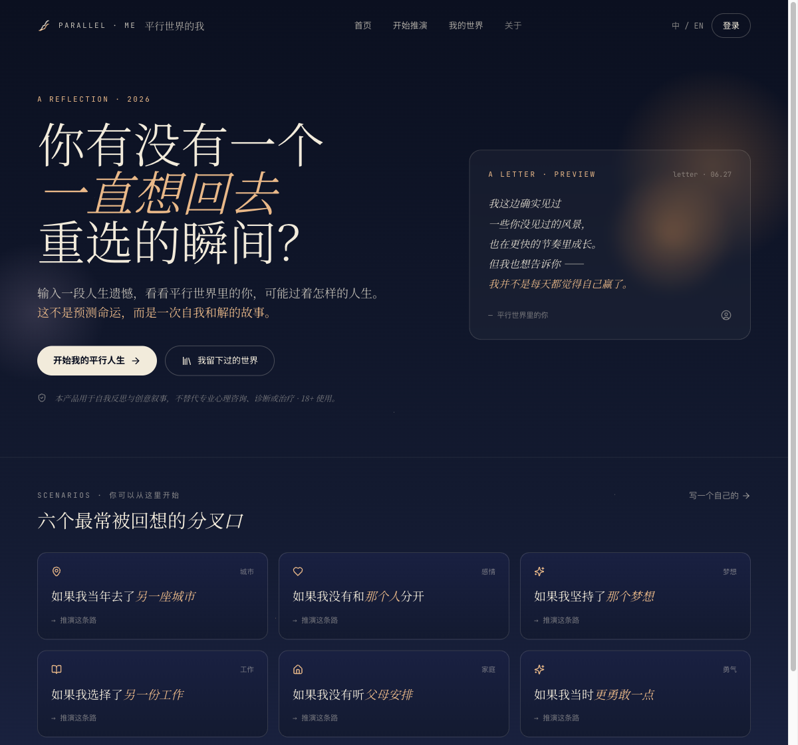
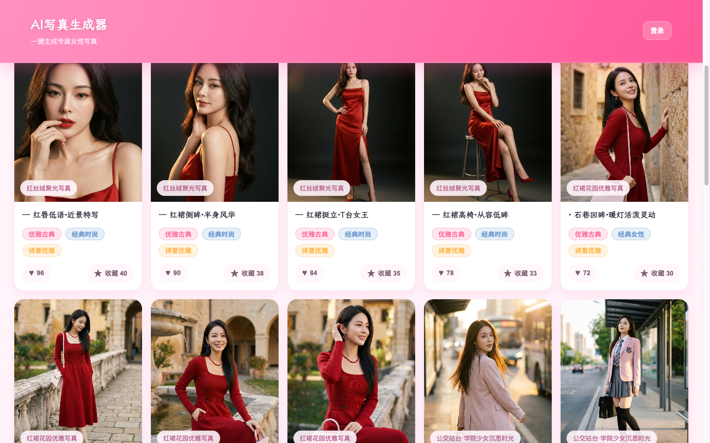
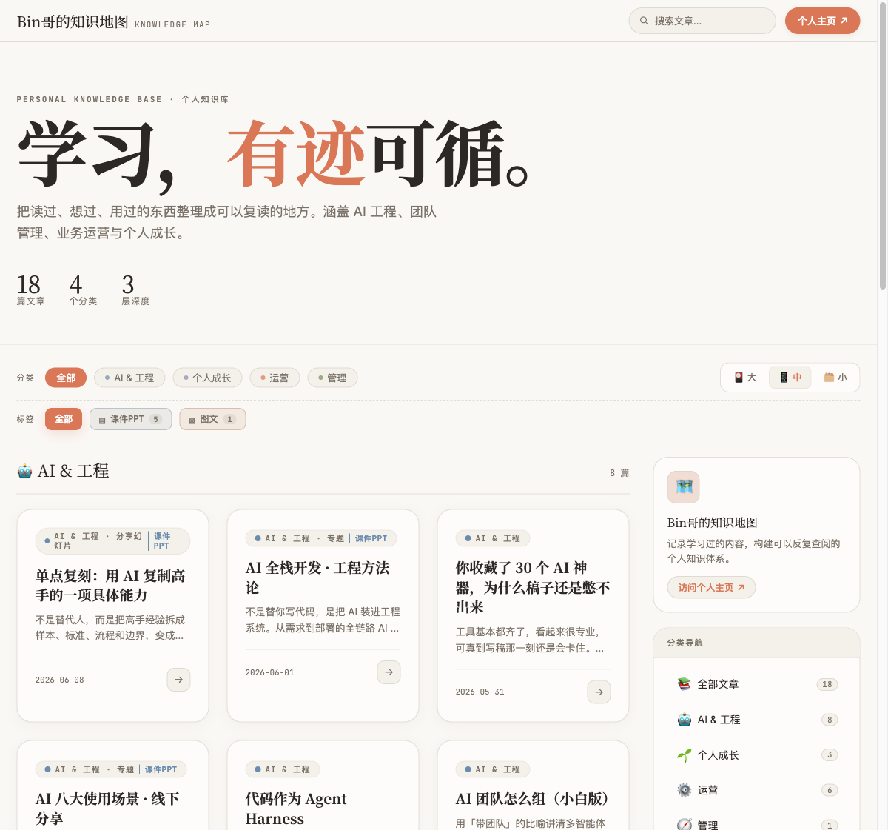
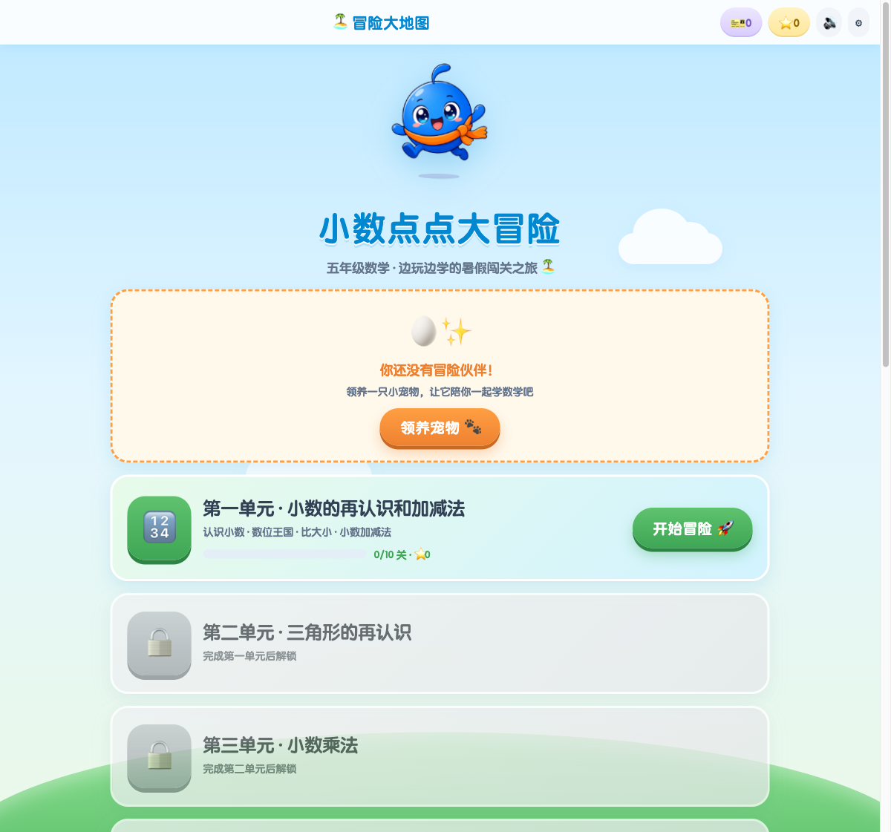

2026-08-09 · 30 MIN LIVE EDITION · 主讲 Bin哥
像甲方一样
像甲方一样
做 AI Coding
不写代码，不等于把方向盘交出去。每一次让 AI 动手前，先看见一个可验收的成果。
这 30 分钟你会带走从找需求、看原型、审计划、验运行，到把项目轻量上线的一套“六次放行”。
今天的边界会讲到上线，但不展开域名、服务器和密钥的复杂配置；先掌握可复用的主路径。
适合新手 不懂代码，也能判断项目对不对适合实践者 已经在用 Codex，也能减少返工与失控
先认识一下 约 01′30″
我是 Bin哥：把 AI 变成可交付的结果
AI APPLICATION PRACTITIONERAI 应用实践者
AI 应用实践者
AI 全栈落地者
我有后端开发和技术管理背景，持续围绕 AI 思维、AI 全栈开发、AI 自媒体运营与多模态创作做真实项目。今天分享的不是概念，而是我反复踩坑后留下的一套项目推进方法。
6000+ 小时实践方法论 × 项目 × 内容从想法到上线
silencebin.com真实作品，不是概念图 约 02′
这些项目，都是沿着“先验收，再放行”做出来的



反面示范 约 01′30″
一句话让 AI 做完，最容易丢掉什么？
点一张卡：看见问题，才能知道在哪一关拦住它。
全场母图 约 01′
控制 AI，不是盯着代码，
而是每步先看成果，再放行
六个名字都用动作词：你只需要知道此刻该看什么、是否同意它继续。
找需求：先判断你在哪条路上 约 02′
有想法和没想法，起手式不一样
让 AI 先问你
不要急着让它开发。先用多轮反问，把脑中的模糊想法逼成一份能验收的需求清单。
① 描述你的业务和目标② 要求它最多连续追问 10 个关键问题③ 最后输出需求清单与首版边界
或
从证据里捞需求
不要硬想“我该做什么产品”。去找已经发生的真实信号，再判断自己能否解决。
有人抱怨：评论 / issue / 提问有人付费：成熟产品 / 付费社群你很熟悉：RSS / 日常工作流趋势发生：Product Hunt / 新场景
贯穿案例 约 03′
先把“做什么”说成可验收的输入和输出
AI 选题变现评估器
给内容创作者：输入人群、标题、大纲和变现方式；输出一份值得不值得做、怎么优化、如何变现的评估报告。
INPUT → 人群 / 标题 / 大纲 / 变现方式
OUTPUT → 评分 / 痛点 / 标题建议 / 内容结构 / 行动清单
OUTPUT → 评分 / 痛点 / 标题建议 / 内容结构 / 行动清单
动手前，5 问答得出吗？
1给谁用？不会判断选题价值的内容创作者
2解决什么痛？不知道值不值得写、怎么改、怎么变现
3输入与输出？输入信息，换来可执行的评估报告
4怎么算做好？建议是否清楚、能否转成下一步行动
5第一版边界？先做单次评估，不先承诺完整商业系统
GATE 01 · 写清楚 NOTION 1 · 约 02′
想法可以口语，落成文档才算需求
原始提示词 · STEP 1
我有一个想法，如图，我希望你帮我分析下我的这个需求，然后生成一份PRD文档，统一放在doc文件夹下，以后文档都放在这个文件夹下面，帮我做个约束，顺便做一下git初始化
验收再放行：是否得到 PRD、文档放置规则与可回退的项目起点？
点击图片放大查看原始记录。PRD 是需求说明，Git 是项目的版本存档。
GATE 02 · 看样子 NOTION 2–3 · 约 02′
先看能看的样子，再开发
原始提示词 · STEP 2
根据PRD文档，设计一个页面展示，我是颜控，我需要美观、高大上的网页展示 [$product-design:index](/Users/silence_mini_pro/.codex/plugins/cache/openai-curated-remote/product-design/0.1.47/skills/index/SKILL.md)
验收再放行：它是不是你想给用户看的样子？如果不是，此刻改的成本最低。
demo 是先看的效果稿，不等于完整系统。点击任一图片可查看原图。
GATE 03 · 看计划 NOTION 4–5 · 约 02′
先看计划，再允许它执行
原始提示词 · STEP 4
原型看起来很不错，按这个原型进行后面的开发，利用任务拆分和TDD原则，其中如果遇到需要我人工设置的内容，提醒我如何设置。
原始提示词 · STEP 5
是的，执行此计划，记得把计划存储到doc中，设置todo list，然后根据任务完成来更新状态
看 demo进入计划模式审任务与验收确认后执行
TDD 的人话：先约定怎么检查，再开发。计划必须由你确认后执行。
GATE 04 · 看运行 NOTION 6–7 · 约 02′30″
出了问题，看得到、查得到、重启得了
原始提示词 · STEP 6
DeepSeek配置文件我已经设置好，接下来我要做测试，有如下要求： 1、我需要你帮我创建一个启动脚本和一个停止脚本，启动脚本要求每次启动的时候检查端口号是否占用，如果占用就kill掉重新启动。 2、在本地设置一个logs文件夹，日期来进行日志保存，在关键点帮我打上日志，比如三方模型的输入输出，前后端交互的输入输出等 3、提示词prompt单独提取为配置文件存储，记得打上注释，方便我修改
验收再放行：启动、停止、日志、配置都能让人看见；没有它们，出错只能靠猜。
安全补充：端口被占用时，先识别占用进程并确认是否属于本项目，再停止；不要把“发现占用”直接等同于强制杀进程。
日志是系统黑匣子：把“不能用”变成可定位、可复现的信息。
GATE 05 · 记改动 NOTION 8 · 约 01′30″
改需求不靠嘴，靠文档留痕
原始提示词 · STEP 8
增加一些需求如下，从现在开始增加规则，临时添加的需求写入到新的PRD中作为补充需求，查询到的bug在doc下新建一个bug文档，进行记录： 1、每个输入项都没有自定义让我设置，提供这个功能 2、一些功能没有做，增加点击后提示“该功能暂开通，请耐心等待”
验收再放行：临时需求进入补充 PRD；已发现的问题进入独立 bug 文档。允许改需求，但不允许失忆。
GATE 06 · 交成果 NOTION 9–10 · 约 02′30″
干完一版，留下能交接的资产
原始提示词 · STEP 9
项目开发完成，帮我整理doc中的文件，要求如下： 1、这次的需求统一命名为v1.0版本，第一版PRD之后提出的需求，作为增补需求增加到PRD文档内容之后。 2、创建复盘v1.0 复盘文件，复盘所有产生的bug和后续增加的需求，总结经验并给出后续需求建议。 3、分析项目，提取可以复用的代码模板，创建文档来标注可用场景和使用方法 4、文档都生成完成后，创建一个wiki，来标记索引v1.0的所有文档路径，方便日后查询
交付资产：版本 PRD、复盘、可复用模板与 wiki 索引。
讲师原始提示词 · STEP 10
我在github上创建一个仓库（git@github.com:SilenceBoy/ai_topic_evaluator.git），帮我把这个项目，关联到这个仓库中并推送，关联之前，帮我创建一份readme文件来介绍该项目，readme中附上软件使用截图，采用中英文双语
交付出口：确认目标仓库后，再提交 README、使用截图与项目代码。
重要：讲师仓库地址只用于保真展示，练习时必须换成自己的仓库。GitHub 是上线链路的一站，但不是终点。
轻量讲上线 约 02′
“项目做完”的标准：别人真的能打开
先讲主路径，不把现场拖进服务器细节。你的目标是拿到一个可访问、可检查、可回退的网址。
① GitHub
代码与 README 入库② 托管平台
连接仓库并构建③ 环境配置
密钥不进入代码仓库④ 真实 URL
访问、日志、回退都验证
代码与 README 入库② 托管平台
连接仓库并构建③ 环境配置
密钥不进入代码仓库④ 真实 URL
访问、日志、回退都验证
今天讲到这里
GitHub 连接托管平台，设置必要环境变量，拿到公网链接并做一次真实访问检查。
后续再深入
自定义域名、DNS、服务器运维、监控告警和更复杂的安全配置。
甲方上线验收四问
- 陌生人能否打开真实 URL？
- 关键功能是否走通一次？
- 密钥是否只在环境变量中？
- 失败后能否看日志并回退？
新手速查 现场回看约 01′
遇到术语，先把它翻成人话
PRD
需求说明
写清做什么、给谁、怎么算好。
git
版本回退
像游戏存档，改坏还能回来。
demo
先看效果
验证样子和流程，不代表已上线。
TDD
先想检查
先定义对错，再开始做。
todo
任务看板
你随时知道做到哪一步。
日志
系统黑匣子
用记录定位问题，不靠猜。
配置
可调开关
不改代码也能改参数和提示词。
README
项目说明书
后来的人知道它是什么、怎么用。
上线前补充 · 能力边界 约 01′15″
这套流程降低失控概率，但不替你承担判断
过程更可控
- 需求被误解时，能够更早发现
- 每个阶段都有人工放行点
- 修改过程有文档和版本记录
- 出现问题时更容易定位与回退
结果天然可靠
- 需求一定正确、没有遗漏
- 测试覆盖所有真实问题
- 密钥和用户数据绝对安全
- 公网服务稳定、合规且不会超支
验收底线AI 的完成报告 ≠ 验收证据；代码能跑 ≠ 可以公开上线。
上线前补充 · 六条红线 约 01′30″
真正上线之前，先守住不失控的底线
高风险操作先确认
删除、覆盖、kill、推送和部署，先展示目标与影响，再由人放行。
密钥隐私不裸奔
不进入代码、截图、聊天和日志；日志默认脱敏，只留必要信息。
真实运行才算验收
不只看 AI 汇报；看命令结果，并亲自走通关键用户路径。
公网接口限制滥用
上线前考虑权限、输入校验、限流、超时和 API 费用上限。
依赖素材来源清楚
检查包名、来源、维护状态与许可证，不盲装、不盲用。
数据变化能够恢复
Git 只能回退代码；数据库和用户数据还需要备份及迁移回退方案。
三不原则：不盲信 · 不裸奔 · 不失控如果密钥已经泄露，先撤销或轮换；只删除文件或补一个提交，不代表旧密钥已经安全。
最后一步 · 现在就开始 约 01′30″
AI 负责写代码，
你负责不失控。
你负责不失控。
不必等学会所有技术再开始。先把目标说清楚，再一关一关放行。
48 HOURS CHALLENGE不要求一次做大，先完成一个可验证、可复盘的小版本。
走完第一个小闭环
01选一个真实想解决的小问题
02让 AI 反问，整理需求清单
03先看原型，不满意就继续改
04确认计划，再允许它开始开发